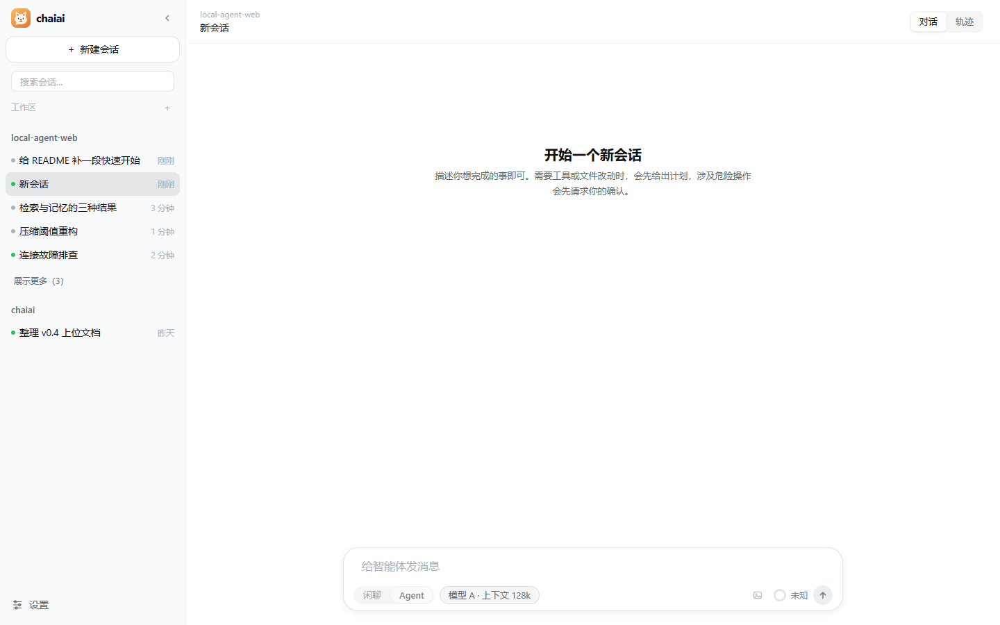

MANUAL · 第 1 章
安装与第一次启动
两条路：用发行包，或从源码跑。两条路最后都得到同一个本机服务 http://127.0.0.1:8000。
需要什么
- Windows 10/11（x64 / x86）。Linux 与 macOS 也能运行，但没有 OS 级写边界，界面与工具结果会如实说明这一点。
- 源码安装需要 Python 与 Node；版本以
pyproject.toml、frontend/package.json为准（前端要求 Node 22.20–22.x、npm 10.9+）。 - 不需要注册账号，也不需要事先写
config.yaml——模型连接在网页设置里填。
从源码启动
以下命令都在 local-agent-web/ 目录执行：
uv sync
cd frontend
npm ci
npm run build
cd ..
uv run python -m local_agent.api
首次启动会创建本机数据库，之后浏览器打开 http://127.0.0.1:8000 就能进界面。
开发时也可以另开一个终端，在 frontend/ 执行 npm run dev，
用 http://127.0.0.1:5173 访问（/api 会代理到 8000）。
用发行包启动
取得发行包后按随包说明安装并启动，入口同样是 127.0.0.1:8000。
安装方式、版本要求与升级 / 卸载步骤以随包文档为准。
跑完应该看到什么
- 终端没有报错，浏览器能打开界面并看到输入框；
- 根路径提示「前端产物不存在」时，是还没构建前端——按提示在
frontend/执行npm run build，或在开发态用npm run dev； 127.0.0.1:8000只在本机可访问，同一局域网的其他设备打不开，这是设计而不是故障。

启动前自检
不确定环境哪里有问题时，先跑诊断（不启动服务、不读密钥）：
uv run python -m local_agent.api --diagnose
它输出一段 JSON：{"ok": true/false, "checks": [...]}，逐项检查配置、前端产物、
三个 SQLite、向量库依赖、git / rg 与模型配置；ok 为假时退出码为 1。
注意它只验证静态条件：不代表模型能连通，也不证明沙箱真的生效。
最后更新 2026-10-19 · 适用版本 v1.0